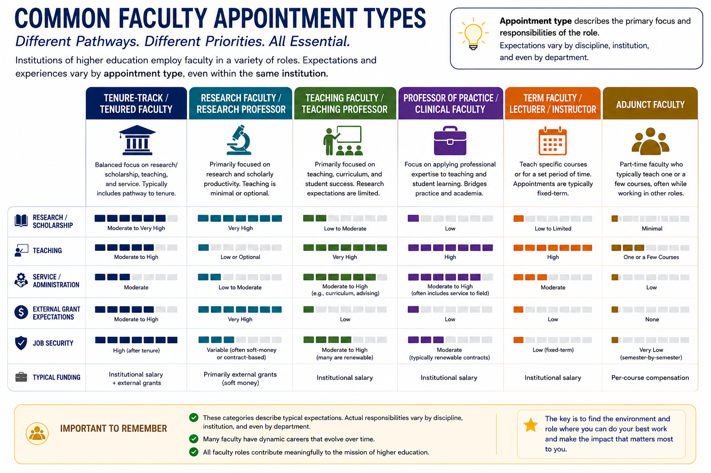
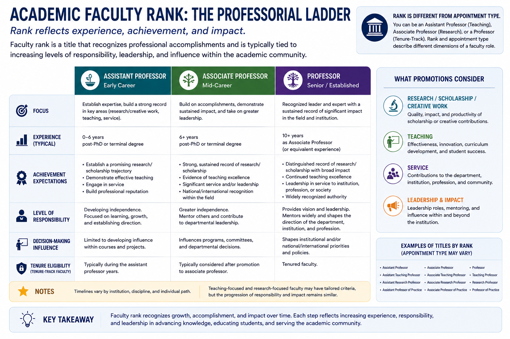

Faculty careers are not one-size-fits-all. Institutions employ faculty in a variety of appointment types, each with different responsibilities, expectations, and pathways for advancement. In addition, faculty members hold academic ranks that reflect their experience, accomplishments, and professional impact. Understanding both appointment type and rank is essential when evaluating faculty positions and identifying career paths that align with your interests and goals.

Faculty appointment type describes the primary focus and responsibilities of a position. While expectations vary by institution and discipline, most faculty appointments fall into several broad categories.
Tenure-track and tenured faculty typically balance research, teaching, and service responsibilities and often have a pathway toward promotion and tenure. Research faculty focus primarily on scholarly productivity and external funding, while teaching faculty concentrate on instruction, curriculum development, and student success.
Professor of Practice and Clinical Faculty appointments emphasize the application of professional expertise to teaching and mentoring. These roles often bridge academic learning with industry or professional practice.
Lecturer, Instructor, and other term faculty appointments are usually teaching-focused positions that may be renewable but are not typically tenure eligible. Adjunct faculty are generally part-time instructors who teach specific courses while often maintaining careers outside the university.
No appointment type is inherently better than another. Each contributes to the mission of higher education in different ways, and many faculty members move between appointment types throughout their careers.

Academic rank reflects a faculty member's experience, achievements, and impact within the institution and broader academic community.
While titles vary somewhat across institutions, rank typically progresses through three major stages: Assistant Professor, Associate Professor, and Professor.
Assistant Professors are early-career faculty members who are establishing their teaching, scholarship, and service portfolios. Associate Professors have demonstrated sustained contributions and professional impact and often take on increasing leadership responsibilities. Professors are recognized leaders in their fields whose work has made significant contributions to research, teaching, professional practice, and institutional service.
Importantly, rank and appointment type are not the same. For example, an individual may hold the rank of Associate Professor while serving in a teaching-focused, research-focused, or tenure-track appointment. Understanding this distinction can help job seekers interpret position announcements and evaluate career opportunities more effectively.
After reviewing the faculty appointment types and academic ranks, consider the following questions:
There are no right or wrong answers. The goal is to begin identifying academic environments where you can do your best work and make the greatest impact.